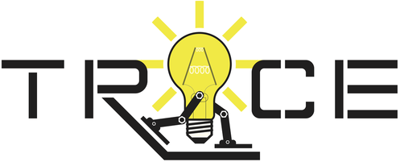
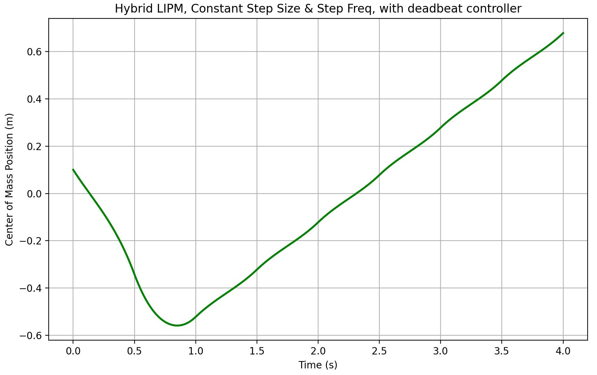

I'm a mechanical engineering student at Purdue University and I am deeply interested in mechanisms, machine design, and controls. Robots and cars fascinate me, and I am eager to apply my skills within these fields. I am incredibly passionate about my work and I enjoy learning new skills and concepts. Additionally, I am committed to ethics and I hope to make a positive impact on the world.
Focusing on control systems and reinforcement learning for robotics.

Undergraduate Research Assistant
TRACE Laboratory - Purdue University, School of Mechanical Engineering.
End-to-End Reinforcement Learning for Humanoid Locomotion
Figure 1: Unitree G1 humanoid walking gait simulation using the Brax PPO framework in MuJoCo MJX.
End-to-End Reinforcement Learning: Trained a forward-walking policy for the 29-DOF Unitree G1 humanoid using Brax PPO within MuJoCo Playground (MJX). Leveraged GPU-accelerated, high-fidelity physics simulation across 256 parallel environments to generate millions of simulation steps, achieving a centroidal forward velocity of 1.056 m/s with a 5.6% velocity tracking error.
Reward Shaping: Applied custom configuration overrides to a MuJoCo Playground joystick environment, iteratively tuning reward-term weights to stabilize locomotion. Rebalanced forward-velocity tracking, stance phase, and foot clearance rewards against stronger penalties on joint torques, action rates, foot slippage, and ground-impact forces.
Retrospective: Relying purely on end-to-end RL highlighted how sensitive policies are to manual reward shaping, which often feels like black-box trial and error. Moving forward, I am focusing on RL and model-based hybrid control architectures that incorporate system dynamics for more predictable, natural, and reliable locomotion.
Full-Order Dynamic 5 Link Robot Simulation
Figure 2: 5 link walker simulation using the full-order multi-rigid-body dynamics model of a humanoid robot.
Full-Order Robot Dynamics: Developed a nonlinear hybrid simulation for a 1.1 m tall, 32 kg 5-link bipedal walker in Python. Utilized the Pinocchio rigid-body dynamics library to continuously compute mass matrices $M(q)$ and non-linear effects $H(q, \dot q) = C(q, \dot q) + G(q)$, achieving a center of mass forward velocity of 0.3 m/s.
Trajectory & Control Loops: Generated smooth Bezier curve swing-foot trajectories and mapped them to task-space via an analytical inverse kinematics solver. Enforced trajectory tracking using a joint-space Proportional-Derivative (PD) controller.
Impact Dynamics: Modeled discrete ground collisions using event-based differential equation solver (solve_ivp with a BDF solver to handle abrupt high impact forces). Enforced the foot-contact velocity constraint $J(q) \dot{q}^+ = 0$ to compute instantaneous post-impact joint velocities $\dot{q}^+$ and impact wrenches $\mathcal{F}$ by solving the coupled linear system:
Figure 3, 4, & 5: SolidWorks assembly & associated photo of my custom NVIDIA Thor Supercomputer & 25,000 mAh power bank mounting device for the Unitree G1 as well as the MuJoCo XML.
Mass & Structural Optimization: Designed and fabricated a lightweight PLA torso mounting plate and structural enclosure to securely mount an NVIDIA Thor dev kit and 25,000 mAh power bank to the Unitree G1, reducing weight by 40% compared to the stock Unitree Thor backpack. Designed the mounting interface around the G1's existing M6 attachment points, increasing infill around high-stress screw locations to reinforce the printed structure.
DFM & Thermal Design: Designed flared ventilation geometries and increased internal clearances around the NVIDIA Thor and power bank to promote convective airflow within the compact enclosure. Included appropriate clearances and reinforced mounting regions, while incorporating brass heat-set inserts at frequently accessed fastener locations to maintain thread integrity through repeated assembly and disassembly.
Physics & Simulation: Computed real-world 3D spatial inertia tensors by scaling SolidWorks inertia matrices with measured physical mass, updating the Unitree G1 MuJoCo XML configuration to accurately reflect modified upper-body dynamics.
Figure 6, & 7: SolidWorks CAD assembly of the custom 6-axis force-torque sensor attachment designed for the Unitree G1 arm.
Application & Function: Designed a modular, grip-force measuring end-effector for the Unitree G1 arm to capture 6-axis capacitive force-torque data ($F_x, F_y, F_z, M_x, M_y, M_z$) during cooperative human-robot locomotion and physical guidance tasks.
Ergonomics & Geometry: Replaced the stock G1 hand with an ergonomic cylindrical housing suited for human palm geometry, ensuring natural comfort and security for cooperative locomotion tasks.
Mechanical Design Optimization: Intentionally shortened the load-plate length, significantly reducing moment arms to maximize torque measurement accuracy across axial, shear, and normal axes.
Reduced-Order LIPM Dynamics & Deadbeat Footstep Control

Figure 8: Center of Mass position trajectory across step cycles under discrete deadbeat ZMP adjustment.
Reduced-Order Dynamic Modeling: Formulated continuous 2D Linear Inverted Pendulum Model (LIPM) equations of motion $\ddot{x} = \frac{g}{z_c}(x - p_x)$ at a fixed Center of Mass height of $z_c = 0.8\text{ m}$, yielding a system natural frequency of $\lambda = \sqrt{\frac{g}{z_c}} \approx 3.50\text{ s}^{-1}$.
Deadbeat Feedback Control: Implemented a deadbeat foot-placement controller sourced from UC Berkeley robotics literature to stabilize walking against external disruptions and accumulated errors. Applied the feedback gain vector $K_{\text{deadbeat}} = \begin{bmatrix} 1 & \frac{1}{\lambda} \coth(\lambda T) \end{bmatrix}$ for a step duration of $T = 0.5\text{ s}$, updating discrete Zero Moment Point (ZMP) locations $p_{x, \text{next}} = p_x + S_{\text{nom}} + K_{\text{deadbeat}} \cdot \mathbf{e}$ to eliminate tracking errors.
Hybrid Numerical Simulation: Integrated continuous phase trajectories between footstep placement events using solve_ivp, validating stability under initial position and velocity distruptions.
Software & Computation
Machine learning implementations and robotics simulations.
Python MuJoCo Quadruped Walking Gait Simulation using closed-loop joint position control - Personal Project
Simulated Forward Locomotion of a 12-DOF Quadruped Robot in a high-fidelity physics environment and implemented a time-varying PD controller with LERP trajectory mapping.
Overview: Implemented a Proportional-Derivative (PD) controller to track time-varying joint trajectories. These trajectories were mapped using piecewise linear interpolation (LERP). Appropriate joint angles were calculated by applying a linear transformation to correct the reference frame mismatch between my custom 2-DOF Inverse Kinematics solver and the robot's local joint configuration. To improve calculation accuracy, I expanded the neural network architecture and adjusted linkage parameters to align with the quadruped’s specific hardware geometry. The simulation utilizes a 0.0003 second timestep and complex friction models to ensure realistic physical interactions. The Quadruped itself weighs nearly 21 kg and the motors have a maximum torque of 20 Nm.
Project Retrospective: While LERP served as a quick baseline for the simulation, it creates severe acceleration discontinuities and infinite jerk for real-world applications. This prevents hardware deployment. I used this critical lesson to directly inform my future work (the 5-Link Walker), where I bypassed LERP entirely in favor of smooth Bezier swing-foot trajectories and proper inverse kinematics.
Inverse Kinematics Solver using Supervised Learning (PyTorch) - Personal Project
Learned fundamental machine learning and supervised learning concepts through the development of an inverse kinematics solver for a 2 degree of freedom robot arm.
Overview: The goal of this project was to gain hands-on exploration of machine learning concepts using PyTorch rather than to build a practical inverse kinematics solver. Using object-oriented programming in python, I initially created a forward kinematics solver, manually generated joint angle data, and used it as input for training a simple neural network model. The model was built using PyTorch and was trained with supervised learning to predict joint angles from end effector positions. I designed the neural network with nn.Linear layers and used the ReLU activation function. For optimization, I employed the Adam optimizer and used mean squared error loss as the criterion. With 1200 points of data and 1200 training loops, the model achieved decent accuracy with an average error of roughly 4.64%. The model accuracy can be improved by using a larger data set, more training loops and using more layers with double the amount of neurons.
Mechanical Projects
Recent mechanism designs and CAD models.
Handheld Coaxial Contra-Rotating Fan
Currently fabricating a handheld contra-rotating fan powered by a single motor. Designed and modeled a custom bevel gear transmission system in SolidWorks to achieve synchronized counter-rotation.
Overview: Designed and currently fabricating a compact handheld fan featuring coaxial counter-rotating blades driven by a single motor. Undertaken as a novel challenge to integrate a custom bevel gear differential within a handheld housing.
Drivetrain & Rotational Dynamics: Engineered a custom bevel gear transmission in SolidWorks that splits single-motor torque into synchronized, counter-rotating fan blades. Enforced rotational symmetry and minimized high-RPM vibration by placing dual set-screws 180° apart on all shaft driven hubs.
Prototyping & Mechanical Testing: Successfully fabricated and assembled the functional internal core mechanism, printing the bevel gears, fan blades, and shaft hubs from Tough 1500 V2 resin to ensure precise gear tooth mesh, high surface finish, and thermal durability. Incorporated ball bearings and synthetic grease lubrication to eliminate friction.
1-DOF Pure Rigid Body Robot Finger Mechanism Design
Designed a novel 1-DOF self-curling robotic finger mechanism comprised of 7 rigid body links.
Overview: Designed a novel multi-loop planar linkage mechanism that converts translational input from a single linear actuator into a curling motion, resembling a human finger. Verified the mechanism’s motion and confirmed the 1-DoF trajectory in SolidWorks.
Kinematics: Configured 7 rigid links to achieve a mobility count of $M = 1$ using the Chebychev-Grübler-Kutzbach criterion, ensuring a single trajectory across all finger joints without passive degrees of freedom.
Actuator Integration: Incorporated a compact linear actuator with an internal lead screw and nut mechanism to prevent backdriving, maintaining finger position without continuous power draw.
2-DOF Humanoid Wrist Mechanism Prototype
Designed, modeled and fabricated a 2-degree-of-freedom wrist prototype using SolidWorks for the Humanoid Robot Club. Handled the CAD assembly and the integration of 3D-printed components.
Overview: The goal of this mechanism is to enable complex hand movements while ensuring that it remains lightweight, minimizing the moment arm to reduce power consumption on the shoulder motors.
Design Implementation: To prevent back-driving without constant power draw, two small linear actuators with internal locking mechanisms were used, rather than pneumatics, hydraulics or even rotary motors coupled with a slider-crank linkage. This configuration, paired with spherical joints, provides active control over yaw and pitch while maintaining the commanded position without continuous power consumption.
Technical Challenges: The initial design used a central spherical joint to mount the end effector, which inadvertently introduced a passive roll degree of freedom. This issue was addressed by designing a custom yaw-pitch connection piece in SolidWorks to eliminate the passive rotation, ensuring the end effector remains stable under external loads.
Education
Academic foundation and scholastic achievements.
Purdue University
Bachelor of Science in Mechanical Engineering GPA: 4.00 / 4.00
Grade Level: Sophomore Relevant Coursework:
Multivariable Calculus, Mechanics, Intro to Engineering, Engineering Projects in Community Service, Linear Algebra, Electromagnetism, CAD and Product Data Management, Ordinary Differential Equations Awards & Recognition:
Dean's List & Semester Honors (Fall 2025, Spring 2026): Awarded for outstanding academic performance in the College of Engineering.
Technical Skills
Core engineering competencies, software, and tools.